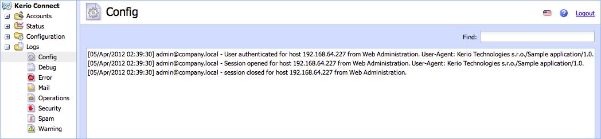

Step by Step Tutorial
This tutorial will guide you through the kerio-api-php basics in a few simple steps - creating an instance, opening a connection, sending a request, parsing the response and closing the connection.
You are a step ahead to become a programmer.
Other Resources
The tutorial and other attached examples use the Administration API for Kerio Connect. Product documentation with list of all interfaces, their methods, and data structures is available online or for download in IDL - a language-neutral way.
1. Working Directory
Prepare a working directory, e.g. project and copy the source files of kerio-api-php library placed in src folder there. You can also copy the template.php and save it as e.g. myApplication.php.
Your working directory may look like this:
project/
└── myApplication.php
└── src/
└── class/
│ └── KerioApiException.php
│ └── KerioApiInterface.php
│ └── KerioApi.php
│ └── KerioApiSocketInterface.php
│ └── KerioApiSocket.php
└── KerioConnectApi.php
2. Initialize kerio-api-php
As the first step we need to load main class for Kerio Connect, the KerioConnectApi.php, create new instance and define the application. It is necessary to identify our application.
require_once(dirname(__FILE__) . '/src/KerioConnectApi.php');
$api = new KerioConnectApi('Sample Application', 'Kerio Technologies s.r.o.', '1.0');
You will then get a better idea about applications using API by inspecting server's config.log and recognize applications from another administration activities.
3. Login
Login includes entering server hostname and login credentials with administration rights.
$api->login('mail.company.local', 'admin', 'secretpw');
It is also possible to use the read-only rights but please keep in mind that you cannot change any settings then.
4. Send a Request
To send a request, call method sendRequest() and it will take care of all necessary things, such as creating a valid request and sending data to server.
$api->sendRequest('Session.whoAmI');
5. Parse Response
If the request is valid and the server has accepted it, you can print the complete response, e.g. using PHP method print_r().
$response = $api->sendRequest('Session.whoAmI');
print_r($response);
The output of the example above will be as follows:
Array(
[userDetails] => Array(
[id] => keriodb://user/ea4d5326-98fe-4ce2-be4f-34078d3527a4/421f9931-88cd-4842-bea2-d13ba8f5ba37
[domainId] => keriodb://domain/ea4d5326-98fe-4ce2-be4f-34078d3527a4
[loginName] => Admin
[fullName] => Administrator
[effectiveRole] => Array(
[userRole] => FullAdmin
[publicFolderRight] => 1
[archiveFolderRight] => 1
)
)
)
Now you can simply print just what you need.
$fullname = $response['userDetails']['fullName'];
printf('Success. You are logged in as <b>%s</b> using the Administration API.', $fullname);
6. Logout
At the end, it is a good practice to logout and close connection to the server. You are done.
$api->logout();
Complete Code
<?php
require_once(dirname(__FILE__) . '/src/KerioConnectApi.php');
/*
* Set your Kerio Connect account
*/
$hostname = '';
$username = '';
$password = '';
$api = new KerioConnectApi('Sample application', 'Kerio Technologies', '1.0');
/* Main application */
try {
/* Login */
$session = $api->login($hostname, $username, $password);
/*
* You can continue writing code here
* and add your custom code, e.g.
* print fooBar();
*/
/* Get who am I ? */
$response = $api->sendRequest('Session.whoAmI');
$fullname = $response['userDetails']['fullName'];
printf('Success. You are logged in as <b>%s</b> using the Administration API.', $fullname);
} catch (KerioApiException $error) {
/* Catch possible errors */
print $error->getMessage();
}
/* Logout */
if (isset($session)) {
$api->logout();
}
Reference Documentation
Here you can find all the reference documentation generated by the kerio-api-php classes, methods and their parameters.
Best Practices
You have completed this short step by step tutorial and maybe you could fit a few tips.